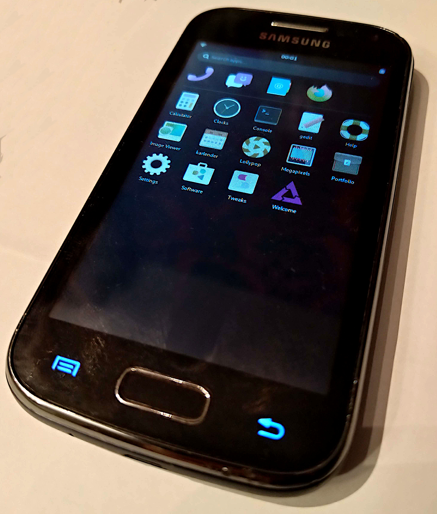

Samsung Galaxy Ace 2 (samsung-codina)
|
 Samsung Galaxy Ace 2 GT-I8160 running Phosh under PostmarketOS | |
| Manufacturer | Samsung |
|---|---|
| Name | Galaxy Ace 2 GT-I8160 |
| Codename | samsung-codina |
| Released | 2012 |
| Category | testing |
| Original software | Android 2.3.6 |
| Hardware | |
| Chipset | ST-Ericsson NovaThor U8500 |
| CPU | 2x 800 MHz ARM Cortex-A9 |
| GPU | Mali 400 MP1 |
| Display | 480x800 PLS |
| Storage | 4 GB |
| Memory | 768 MB |
| Architecture | armv7 |
{kind=link}
| USB Networking |
Broken
|
|---|---|
| Flashing |
Works
|
| Touchscreen |
Works
|
| Display |
Works
|
| WiFi |
Works
|
| FDE |
Broken
|
| Mainline |
Works
|
| Battery |
Works
|
| 3D Acceleration |
Works
|
| Audio |
Broken
|
| Bluetooth |
Broken
|
| Camera |
Broken
|
| GPS |
Broken
|
| Mobile data |
Broken
|
| SMS |
Broken
|
| Calls |
Broken
|
| USB OTG | |
| NFC |
Works
|
| Accelerometer |
Works
|
|---|---|
| Magnetometer |
Works
|
| Ambient Light |
Works
|
| Proximity |
Works
|
| Hall Effect |
Unavailable
|
| Ir TX | |
|---|---|
| TrustZone | |
|
This device is based on ST-Ericsson U8500. See the SoC page for common tips, guides and troubleshooting steps |
Contributors
- nergzd723
Maintainer(s)
Users owning this device
Variants
A few different variants of the Codina was produced by Samsung, all named Samsung Galaxy Ace 2 but with different model codes. At least one of them has hardware differences.
| Model | Features | Notes |
|---|---|---|
| GT-I8160 | Vanilla | |
| GT-I8160chn | Targeted for the chinese market | |
| GT-I8160I | ||
| GT-I8160L | ||
| GT-I8160P | NFC | Test with nfctool -d nfc0 -1 -p |
A Samsung Galaxy 2 La Fleur exist, in white and red/pink covers with flower decorations. These are just a aestetic difference with no hardware differences.
A special version of Codina is called "Codina TMO" (as in T-mobile) and is called Samsung Galaxy Exhibit or SGH-T599. This device contains upgraded hardware and uses a completely different device tree.
The Samsung Galaxy Ace 2x and Samsung Galaxy Trend have similar looks but are not Codina variants, these are based on Qualcomm chipsets.
How to enter flash mode
Odin Mode: While turned off, hold POWER+HOME+Vol-
Fastboot: Hold Vol- while booting.
Installation
The mainline kernel can only be booted through U-Boot, not directly with the Samsung bootloader. U-Boot is installed as intermediate bootloader on the boot partition, so it does not replace the Samsung bootloader entirely.
Boot into Download Mode using Power + Volume Down + Home and follow the the NovaThor U8500 U-Boot installation instructions to install U-Boot.
Finally, follow the Installation guide.
Notes
While charging now works with the mainline kernel as of linux-postmarketos-stericsson 5.18-rc4 in postmarketOS, it is good to note that if you somehow end up depleting the battery entirely, you risk bricking your device as it cannot charge if it cannot boot to the kernel, and it cannot boot to the kernel if the battery level is too low as it shuts down before it gets there. This is also the case in Android. If you end up in this situation, you can either get an external charger or a new battery.
Installing recovery
samsung-codina uses weird proprietary Samsung boot format to boot recovery using the main kernel. u-boot can only boot recoveries that are in Android boot.img format. As a workaround, you can get vmlinuz from postmarketOS installation(do pmbootstrap export after pmbootstrap install), and create boot image with mkbootimg(using recovery CPIO).
Bluetooth
Bluetooth does not have any Bluetooth device address (bdaddr or "MAC address") set after boot at the moment. To make Bluetooth work, you need to manually configure one:
# apk add bluez-btmgmt # btmgmt public-addr <bdaddr>
where <bdaddr> is a MAC address like 53:33:6d:69:6e:69.
The Bluetooth controller should then show up in bluetoothctl:
# apk add bluez # rc-service bluetooth start $ bluetoothctl
You can e.g scan for devices:
[bluetooth]# show [bluetooth]# power on [bluetooth]# advertise on [bluetooth]# system-alias codina [bluetooth]# scan on
Sensors
- STMicroelectronics LIS3DH accelerometer
- Alps hscdtd008a magnetometer
- Amstaos TMD2672 light and proximity sensor
The accelerometer does work albeit it needs polling. iio-sensor-proxy does the right thing as can be confirmed at the command line:
# monitor-sensor Accelerometer orientation changed: bottom-up Accelerometer orientation changed: right-up Accelerometer orientation changed: bottom-up Accelerometer orientation changed: left-up Accelerometer orientation changed: normal Accelerometer orientation changed: right-up Accelerometer orientation changed: bottom-up
It seems iio-sensor-proxy fails to apply the mounting matrix to polled sensors.
It seems for example Phosh cannot handle these events from iio-sensor-proxy properly as of writing.
To test the sensors using iio_generic_buffer you first have to create a hrtimer trigger like this:
# mkdir /sys/kernel/config/iio/triggers/hrtimer/instance1
Then you can use this to poll values from the accelerometer or magnetometer like this:
# iio_generic_buffer -a -c 10 -n lis3dh -t instance1 # iio_generic_buffer -a -c 10 -n hscdtd008a -t instance1
Some udev hwdb updates might be needed for all devices to work properly with iio-sensor-proxy.
GPS
The Codina has a Broadcom BCM4751 GPS chip.
DSI Scaling Error in Phosh
If you are running phosh, and the scaling is wrong so that you cannot type in the password to unlock the initial login screen, this can be fixed by changing this file /usr/share/phosh/phoc.ini like this:
[output:DSI-1] scale = 1
See also
- pmaports!1275 Initial merge request
- Kernel package
- Upstream devicetree in Torvalds' kernel tree
Known bug
While in fastboot, PC may not detect the device. Try rebooting the device.